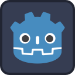

AsSsombrado
🥇 1º LUGAR UFPI
AsSsombrado
🥇 1º LUGAR UFPI
AsSsombrado
🥇 1º LUGAR UFPI
AsSsombrado
🥇 1º LUGAR UFPI

Desenvolvido em Godot Engine 4 com integração física em hardware via microcontrolador ESP32, sensores ópticos LDR em divisor de tensão e emulação de controle Bluetooth BLE Gamepad.
Mayan Sousa
Ravi Pires
Rubuão Alves
Luis Felipe Patrocinio
Robótica & Sistemas Embarcados
Colégio CEV
Feira de Robótica InovaCEV • 2026
Interaja com a maquete tridimensional da montagem física real. Arraste com o mouse para girar em 360°, dê zoom e clique nos botões para inspecionar os sensores, a placa ESP32 e o facho da lanterna física.
Cada um dos 3 LDRs foi montado dentro de um tubo colimador escuro. Esse design óptico impede que a iluminação ambiente da sala da feira ative os sensores acidentalmente, aceitando apenas o facho direto da lanterna física.
Os sensores foram fixados em um arco com separação angular calculada: Esquerda (-28°), Centro (0°) e Direita (+28°), garantindo que o jogador tenha que virar fisicamente o corpo e a lanterna para mirar.
O cérebro do dispositivo. Alimenta os divisores de tensão com 3.3V estáveis e realiza o pooling ultra-rápido das portas GPIO 15, 2 e 4, transmitindo instantaneamente os pacotes BLE HID ao computador onde roda o Godot.
Clique nos nós do diagrama para entender a engenharia por trás do circuito e como vencemos os desafios de hardware do ESP32.

O jogador segura uma lanterna convencional no mundo real. Ao mirar nos pontos físicos marcados na moldura do estande (Esquerda, Centro e Direita), o facho de luz incidente altera a resistência dos sensores fotoelétricos LDR.
Fantasmas e aparições surgem nas 3 direções da sala. O jogador precisa mirar a lanterna com precisão cirúrgica antes de ser atacado. Mas cuidado com as armadilhas!
Corresponde ao sensor LDR da esquerda da tela. Dispara a ação de iluminar o canto esquerdo do quarto escuro via tecla A ou botão do gamepad BLE.
Corresponde ao sensor LDR central. Ilumina o fundo do quarto, onde os fantasmas se aproximam frontalmente via tecla W.
Corresponde ao sensor LDR da direita. Protege a janela assombrada da mansão via tecla D ou botão do gamepad BLE.
Conheça as entidades que assombram as noites do jogo:
A aparição mais frequente da noite. Surge na névoa e exige que você aponte a lanterna na direção certa para exorcizá-lo com a luz.

Move-se com velocidade assustadora! Requer reflexos instantâneos e agilidade motora imediata com a lanterna física antes do bote.
Aproxima-se em ritmo arrastado. Parece fácil de eliminar, mas causa distração fatal enquanto outros fantasmas emergem nos outros lados!
 ⚠️ Inimigo Falso
⚠️ Inimigo Falso
Ao contrário dos fantasmas comuns que precisam da luz para serem derrotados, o Inimigo Falso (Esqueleto) é uma armadilha psicológica! Se o jogador atirar a lanterna por impulso ou susto, a tela pisca em vermelho, toca o grito assustador do jumpscare e você perde na hora: "PEGOU NO CATAVENTO!".
Confira o código real extraído diretamente dos repositórios do jogo na Godot Engine e do firmware oficial em C++ no ESP32.
func testar_lanterna(direcao):
# Efeitos visuais e sonoros da lanterna acendendo na sala
flash_luz.color.a = 0.4
som_lanterna.play()
# Varre todos os inimigos ativos na sala de trás para frente
for i in range(inimigos_ativos.size() - 1, -1, -1):
var inimigo = inimigos_ativos[i]
# Ignora se não estiver na direção que a lanterna apontou
if inimigo.posicao != direcao:
continue
# ⚠️ A PEGADINHA: Se apontou a lanterna para o esqueleto falso, perde na hora!
if inimigo.tipo == "falso":
print("APONTOU PARA O FALSO!")
game_over() # Dispara Jumpscare ("PEGOU NO CATAVENTO!")
return
# Se for um fantasma comum (normal, rápido ou lento), exorciza com a luz
print("MATOU:", inimigo.tipo)
som_inimigo_derrotado.play()
flash_luz.color = Color(0.8, 1.0, 0.8, 0.6) # Flash verde de acerto
inimigo.node.queue_free()
inimigos_ativos.remove_at(i)
returnEscaneie o QR Code abaixo com a câmera do seu celular para abrir esta apresentação, conferir o repositório no GitHub e jogar o AsSsombrado ao vivo no estande!